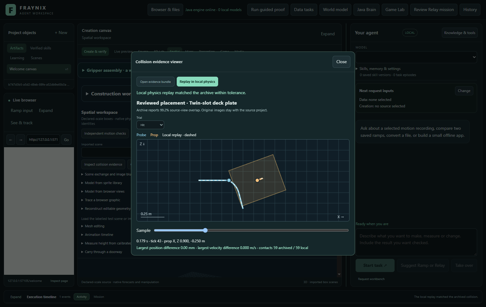
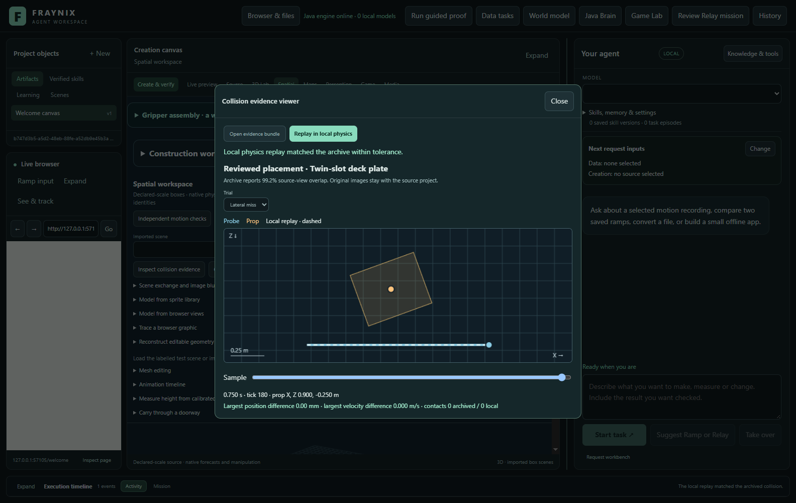
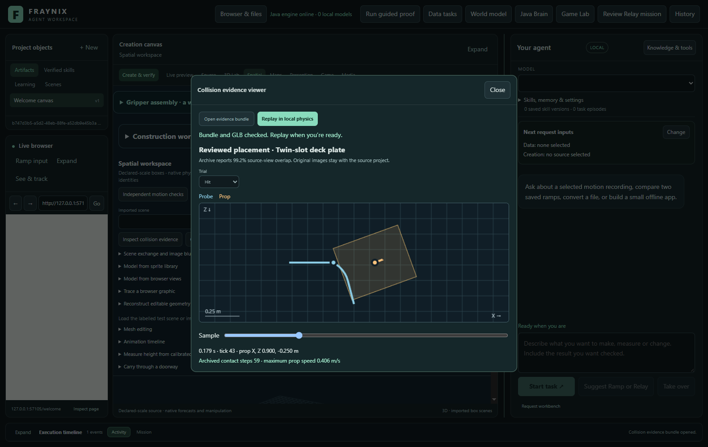

Replay a collision bundle in a fresh project
Open a verified-placement archive, rerun both contact branches and compare the measured paths.
The recipient reproduced first contact on tick 43, 59 hit contact steps and zero miss contacts. Every sampled position and velocity matched on Windows.

The archived and local hit paths coincide

The lateral miss records zero contacts

The archive is checked before running a local replay
System files
Open source